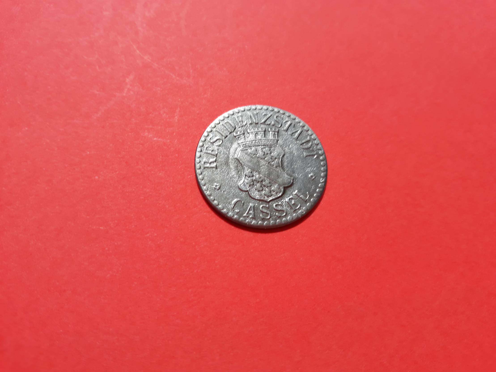

Kiek geležies reikia per dieną? - SveikaTiesa.lt
 SveikaTiesa.lt Maisto papildai Sveikata A-Ž FacebookCBD nemigai: nauda, šalutinis poveikis ir gydymas
Vitaminas E: ar jis tikrai veikia?
Metilkobalaminas prieš Cianokobalaminą: kokie skirtumai?
Chlorofilas kokia nauda mūsų organizmui?
CBD vartojimas pirmą kartą: kiek ir kaip?
Gauruotosios dioskorėjos nauda: ar turime už ką ją liaupsinti?
SveikaTiesa.lt Maisto papildai Sveikata A-Ž SveikaTiesa.lt Maisto papildai Sveikata A-Ž Sveikata A-ŽKiek geležies reikia per dieną?
6 mėn. ago 2 471 Perskaityta 7 Min Read Geležies norma mūsų organizmui priklauso nuo mūsų amžiaus. Ar žinote, kiek jūsų organizmui reikia geležies? Komentuoti Pasidalinti! FacebookTiek geležies stoka, tiek jos perteklius organizme gali sukelti sveikatos problemų, pavyzdžiui, kepenų ligas, geležies stokos sąlygotą anemiją, širdies veiklos sutrikimus ir kt. ( Šaltinis ). Tad natūralu, jog kyla klausimas, koks gi geležies kiekis idealus. Tačiau atsakyti į šį klausimą trumpai ir aiškiai yra sudėtinga. Kodėl? Nors yra tam tikros rekomendacijos dėl reikalingo suvartoti geležies kiekio, bet konkrečiam geležies poreikiui įtakos turi ir individualūs veiksniai, pavyzdžiui, amžius, lytis, mityba, dieta ir kt.
Tad straipsnyje aptarsime, kaip žinoti, jog trūksta geležies ir kiek jos reikia gauti, atsižvelgiant į įvairius aspektus.
Geležis: kas tai ir kodėl ji svarbi?
Tai – maistinė medžiaga, vaidinanti gyvybiškai svarbų vaidmenį pernešant deguonį. Ji jungiasi su hemoglobinu ir padeda transportuoti raudonuosius kraujo kūnelius iš plaučių į kitus audinius ( Šaltinis ).
Natūralu, jog geležies yra mūsų vartojamuose produktuose. Galima skirti du geležies tipus: heme ir non-heme . Pirmoji gaunama iš gyvūninės kilmės baltymų, o antroji – iš augalinių šaltinių.
Lyties ir amžiaus įtaka geležies poreikiui
Geležies poreikis skiriasi priklausomai nuo lyties ir amžiaus.
Kūdikiai ir vaikai iki 13 metų
Berniukų ir mergaičių geležies poreikiai nuo kūdikystės iki vėlyvos vaikystės yra vienodi ( Šaltinis ).
Naujagimiams geležies reikia mažiausiai. Tinkamas suvartojimas kūdikiams iki šešių mėnesių yra 0,27 mg per parą. Jei kūdikis maitinamas motinos pienu, tai jo geležies poreikis yra visiškai patenkinamas. Kūdikiams, kurie gimsta anksčiau, t. y. neišnešiotukams, geležies reikia kiek daugiau nei laiku gimusiems. Tas pats pasakytina ir apie mažo svorių kūdikius.
7–12 mėnesių kūdikiams geležies reikia kur kas daugiau – apie 11 mg per parą, atsižvelgiant į rekomenduojamas mitybos normas ( Šaltinis ). Taip yra dėl sparčiai besivystančių smegenų ir kraujo tiekimo poreikių. Geležis nepaprastai svarbi tinkamam smegenų vystymuisi. Vaikams nuo metukų iki trejų geležies poreikis yra 7 mg per parą, nuo 4 iki 8 metų – 10 mg per parą, o nuo 9 iki 13 metų – 8 mg per parą ( Šaltinis ).
Paaugliai 14–18 metų
Nuo 14 iki 18 metų berniukams rekomenduojama geležies paros norma yra 11 mg ( Šaltinis ). Paauglėms mergaitėms geležies reikia kiek daugiau – 15 mg per parą. Taip yra todėl, kad šio amžiaus mergaitėms geležies reikia ne tik augimui palaikyti, kaip berniukams, bet ir kompensuoti menstruacijų metu prarandamą geležį ( Šaltinis , šaltinis , šaltinis ).
Geležies kiekis mūsų organizmui priklauso nuo mūsų amžiaus ir lyties.Suaugusiems vyrams
Spartus fizinis ir smegenų augimas sulėtėja sulaukus 19 metų. Tad vyriškos lyties atstovų geležies poreikis suaugus stabilizuojasi. Nepriklausomai nuo amžiaus, 19 metų ir vyresniems vyrams reikia 8 mg geležies per parą sveikatai palaikyti ( Šaltinis ). Intensyviai sportuojantiems reikia kiek daugiau.
Suaugusios moterys
Moterims, kurioms yra menstruacijos, geležies reikia daugiau. Taip yra todėl, kad kraujyje yra apie 70 proc. jūsų kūno geležies. Ciklo pradžioje kūnas per parą praranda apie 2 mg geležies ( Šaltinis , šaltinis , šaltinis , šaltinis ). Moterims nuo 19 iki 50 metų per parą reikia 18 mg geležies. Sportuojančioms – dar kiek daugiau, o vyresnėms kaip 50 metų – 8 mg geležies per parą ( Šaltinis ).
Geležis nėštumo ir žindymo laikotarpiu
Nėštumo metu geležies poreikis išauga iki 27 mg, kad drauge būtų patenkinti ir vaisiaus poreikiai ( Šaltinis ). Žindymo laikotarpiu, palyginti su nėštumu, geležies reikia mažiau. Svarbu patenkinti ir moters, ir kūdikio poreikius – maždaug 9–10 mg ( Šaltinis ). Žindymo metu išskiriamas hormonas, galintis slopinti menstruacijas, tad rekomendacijos pateikiamos darant prielaidą, jog šiuo laikotarpiu geležis neprarandama menstruacijų metu ( Šaltinis , šaltinis ).
Tik reikiamas kiekis
Geležies perteklius
Geležies daugiausia žmogaus kraujyje. Tad, pavyzdžiui, žmonėms, kuriems reguliariai perpilamas kraujas (sergant tam tikromis ligomis), gali kilti rizika gauti per daug geležies ( Šaltinis ). Tokia būklė žinoma kaip geležies perkrova. Ir nors geležis gyvybiškai svarbi, bet esant per dideliam kiekiui gali būti toksiška ir pakenkti kepenims, širdžiai bei kitiems gyvybiškai svarbiems organams.
Atminkite, jog didžiausias geležies suvartojimas per parą neturėtų viršyti 40–45 mg, taip pat atsižvelgiant į lytį ir amžių ( Šaltinis ).
Geležies trūkumas
Nėščios moterys, kūdikiai, ištvermės sporto propaguotojai, paauglės mergaitės patiria didžiausią geležies trūkumo riziką ( Šaltinis , šaltinis , šaltinis , šaltinis ). Geležies pakankamai negaunantys kūdikiai gali svorio priaugti labai lėtai. Jie būna išblyškę, stokoja apetito, būna irzlūs ir linkę dažniau susirgti.
Geležies trūkumas gali sąlygoti prastą dėmesio koncentravimą, susikaupimo stoką, neigiamai veikti vaikų mokymosi rezultatus ( Šaltinis ). Nepakankamas geležies kiekis taip pat gali sukelti geležies stokos anemiją ( Šaltinis , šaltinis , šaltinis ). Jei turite būtent šią sveikatos problemą, jūsų kūne nėra pakankamai geležies naujiems raudoniesiems kraujo kūneliams susidaryti. Paprastai to priežastis yra dieta , kurioje trūksta geležies, arba lėtiniai kraujo netekimai ( Šaltinis ).
Simptomai, į kuriuos reikia atkreipti dėmesį
Jei negaunate pakankamai geležies, galite jausti silpnumą, nuovargį , ant kūno gali lengvai atsirasti mėlynių net nuo visiškai menko sumušimo. Oda gali būti išblyškusi, neretai jaučiamas nerimas, rankos ir kojos gali būti šaltos, nagai trapūs ( Šaltinis ).
O jei jaučiate sąnarių skausmą, pakitusį odos tonusą, lengvai susergate, gali būti, kad geležies gaunate per daug. Ypač pavojus kyla tiems, kuriems reguliariai atliekamas kraujo perpylimas ( Šaltinis ).
Jei nerimaujate dėl to, kad geležies vartojate per daug ar jos gaunate per mažai, pasitarkite su savo gydytoju.
Kitos aplinkybės, galinčios turėti įtakos geležies poreikiui
Geležies poreikį gali paveikti ir kitos aplinkybės, pavyzdžiui, dietos, mityba, tam tikri vartojami vaistai, sveikatos būklė.
Mitybos apribojimai
Besilaikantiems veganų dietos geležies rekomenduojama paros norma išauga kone dukart, palyginti su žmonėmis, valgančiais mėsą. Taip yra todėl, kad non-heme geležis organizmui nėra taip lengvai prieinama kaip heme geležis ( Šaltinis , šaltinis ). Pavyzdžiui, sveikai suaugusiai moteriai, kuriai yra 19–50 metų ir kuri reguliariai valgo gyvūninės kilmės baltymus, geležies gali prireikti apie 18 mg per parą. O štai jei toji moteris laikysis veganiškos dietos, geležies poreikis bus net apie 32 mg.
Tam tikri vaistai
Kai kurie vaistai taip pat gali išeikvoti geležį arba su ja sąveikauti ir tai pakeis jos poreikius. Pavyzdžiui, geležies papildai neigiamai paveikia veiksmingumą tam tikrų vaistų, skirtų gydyti Parkinsono ligą. Kai kurie refliuksui gydyti skirti preparatai neigiamai veikia geležies įsisavinimą, tad jei ilgai juos vartosite, gali padidėti geležies poreikis ( šaltinis , šaltinis , šaltinis ).
Jei vartojate kokių nors vaistų, dėl geležies papildų pasitarkite su savo gydytoju.
Sveikata
Tam tikros sveikatos problemos gali turėti įtakos geležies poreikiui. Pavyzdžiui, kraujavimas iš virškinamojo trakto, atsirandantis dėl opų ar vėžio, padidėjęs kraujo netekimas gali reikšti, kad geležies reikia papildomai. Jos poreikis išauga ir reguliariai atliekant inkstų dializę ( Šaltinis ).
Be to, vitamino A trūkumas gali sutrikdyti organizmo gebėjimą efektyviai absorbuoti geležį. Tai irgi didina jos poreikį ( Šaltinis ).
Kaip į racioną įtraukti pakankamai geležies?
Heme geležis yra efektyviausiai absorbuojama, jos gausu vėžiagyviuose, organų mėsoje, kiaušiniuose, paukštienoje.
Geri geležies šaltiniai vegetarams yra avinžirniai, sėklos, pupelės, lapiniai žalumynai.
Puiki žinia smaližiams – tamsiame šokolade yra daug geležies ( Šaltinis ).
Nepamirškite, kad labai svarbu ir tai, ką valgote drauge su daug geležies turinčiais produktais. Pavyzdžiui, geležies įsisavinimą didina vitaminas C, tad valgydami geležies turinčio maisto nepamirškite į draugiją jam priimti ir vitamino C turtingų produktų. ( Šaltinis ). O štai kalcis geležies įsisavinimą slopina ( Šaltinis ).
Papildai
Jei manote, kad savo racioną turėtumėte papildyti geležimi, tai papildai gali būti geras sprendimas. Tik dėl jų vartojimo geriausia pasitarti su gydytoju. Papilduose gali būti skirtingas kiekis geležies.
Tiesa, turėtumėte žinoti, jog geležies papildai gali sukelti vidurių užkietėjimą, diskomfortą žarnyne, todėl geriau kiek įmanoma daugiau geležies gauti su maistu ( Šaltinis ).
Pabaigai
Stabiliausias geležies poreikis yra vyrams, o moterims jis kinta priklausomai nuo amžiaus ir tam tikrų gyvenimo tarpsnių. Taip pat geležies poreikiui įtakos turi tokie veiksniai kaip dietos, sveikatos sutrikimai, vartojami vaistai.
Būsena, kai geležies per daug arba per mažai, yra žalinga sveikatai. Jei nežinote savo geležies poreikių ar planuojate pradėti vartoti papildus su geležimi, pasitarkite su savo gydytoju.
Žymos geležies maisto papildas geležies rekomenduojama dienos norma geležies vitaminai geležisJums taip pat bus įdomu
Sveikata A-ŽCBD nemigai: nauda, šalutinis poveikis ir gydymas
2 sav. ago Sveikata A-ŽVitaminas E: ar jis tikrai veikia?
4 sav. ago Sveikata A-ŽMetilkobalaminas prieš Cianokobalaminą: kokie skirtumai?
1 mėn. agoKomentuoti
KomentuotiIštrinti komentarą
Trūkinėja lūpos dėl vitaminų stokos? - SveikaTiesa.lt parašė: 2020 3 rugpjūčio 8:59[ ] Geležis reikalinga daugeliui procesų mūsų organizme, įskaitant ir deguonies transportavimą, DNR sintezę bei eritrocitų gamybą. Šis mineralas taip pat vaidina reikšmingą vaidmenį odos sveikatai, žaizdų gijimui bei uždegiminių procesų reguliavimui (šaltinis, šaltinis). [ ]
Atsakyti